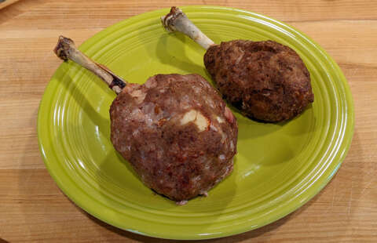

Meat on the Bone

Luffy's favorite, Meat on the Bone
Egg and Chicken Scotch Egg
Although it's a somewhat simple dish. This is the favorite meal of the
future
King of the Pirates
, Monkey D. Luffy. Chef Sanji prefers to make more complex dishes, however
as it's his captain's favorite dish, he always ensures to prepare this
meal with the
utmost care
.

Ingredients
- 4 chicken drumettes
- 4 hard-boiled eggs
- 30g panko
- 2 tbsp milk
(A)
- 500g meat (taken from chicken bones)
- 1 tsp salt
- dash black pepper
- 1 egg
- vegetable oil as needed
Directions
- Cut the meat off the bone
-
Put milk and panko in a bowl. Knead(A) ingredients together, add to the
panko/milk bowl and continue to knead.
-
Wrap the egg in the meat still connected to the bone. Coat hands in oil
and pack step two's ingredients around the egg and meat.
- Preheat oven to 200°C. Cook 15-20 minutes.
Return to Main Page